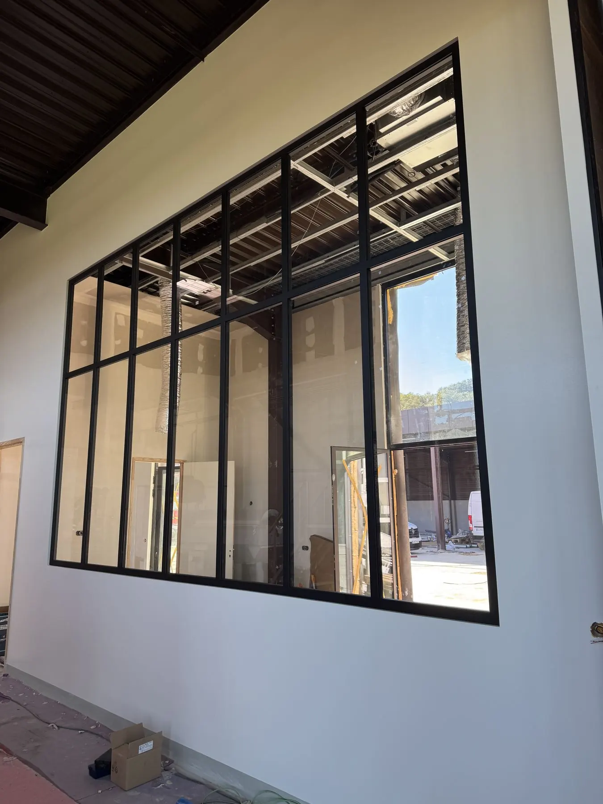
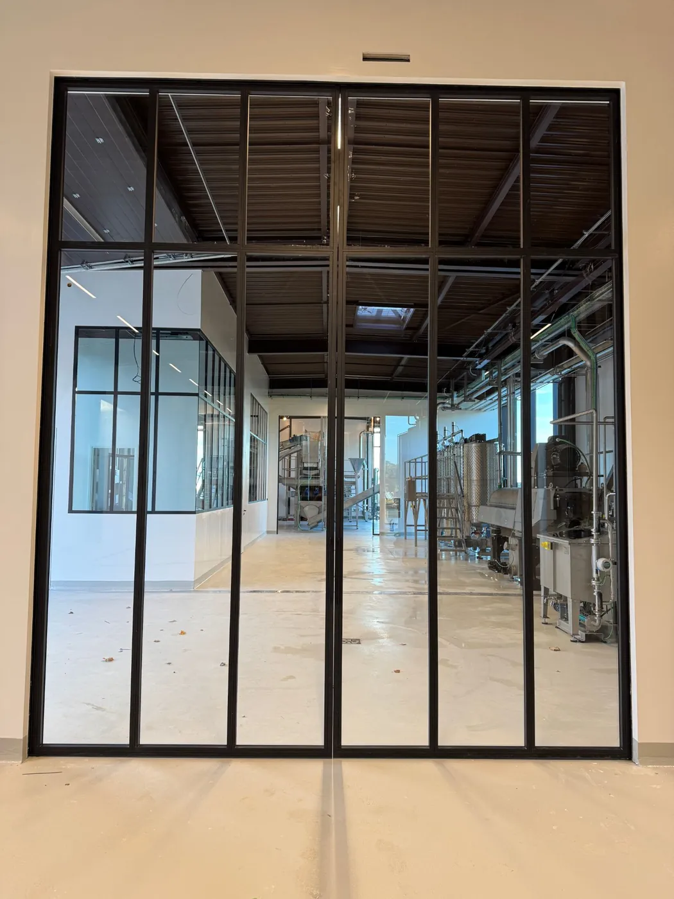
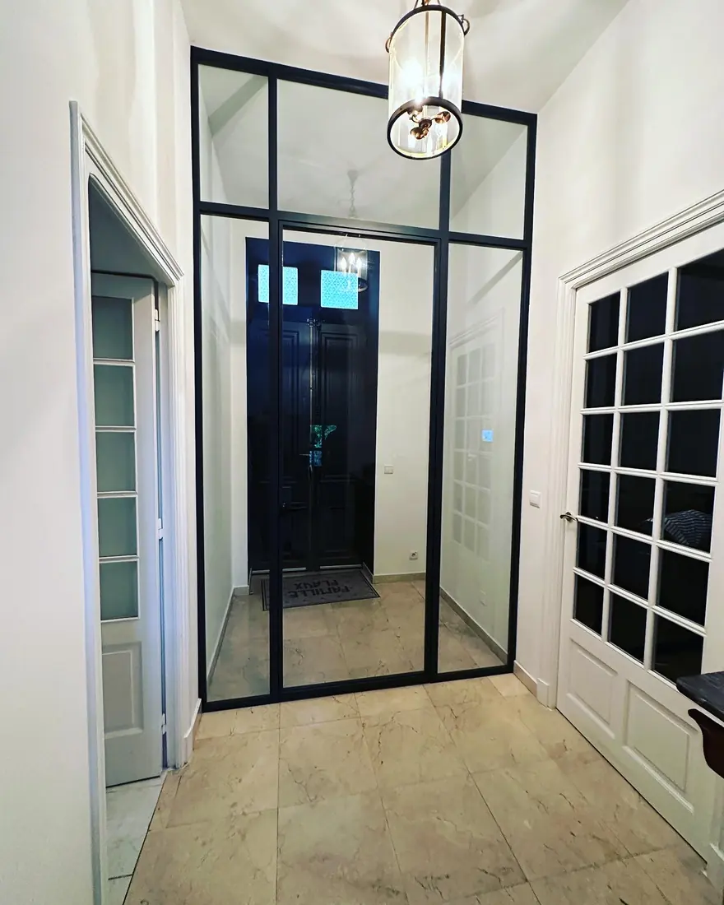
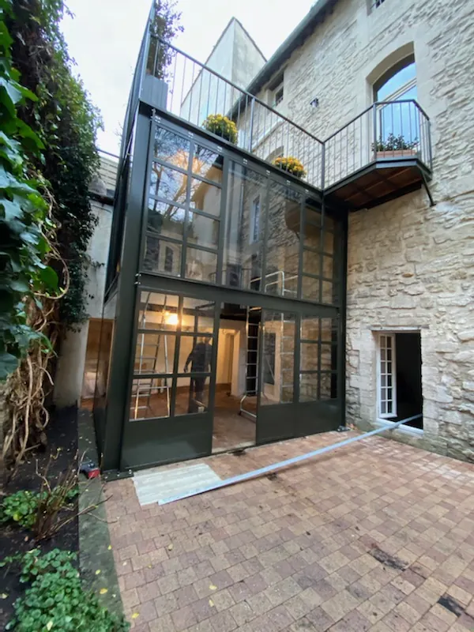
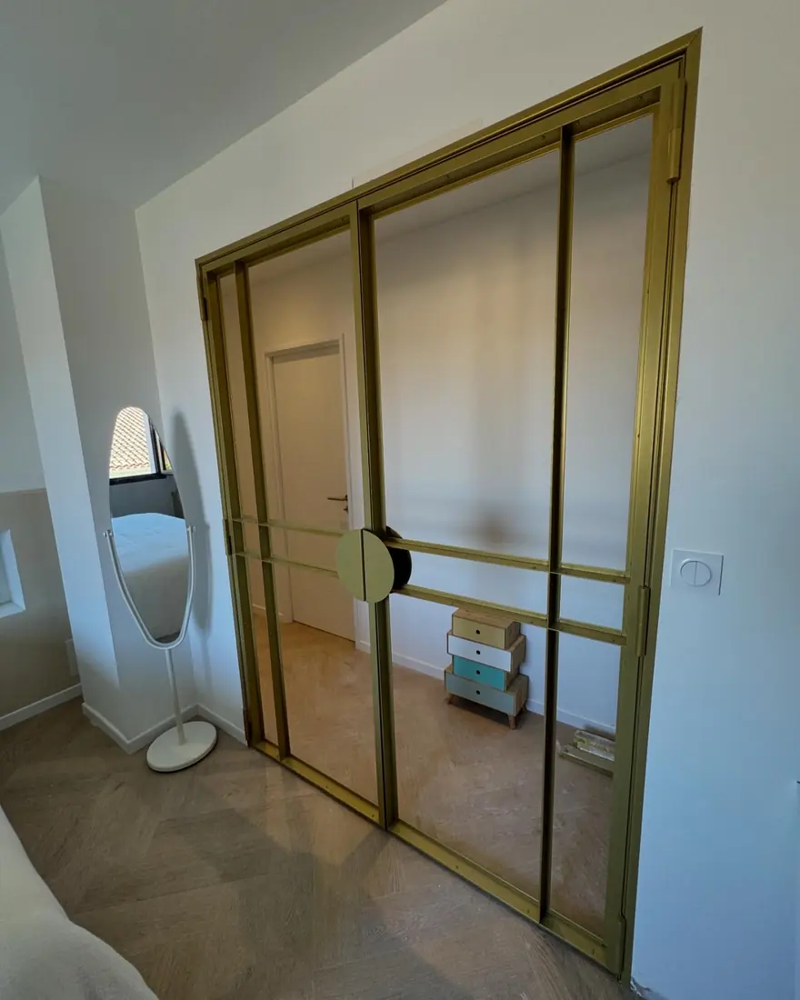
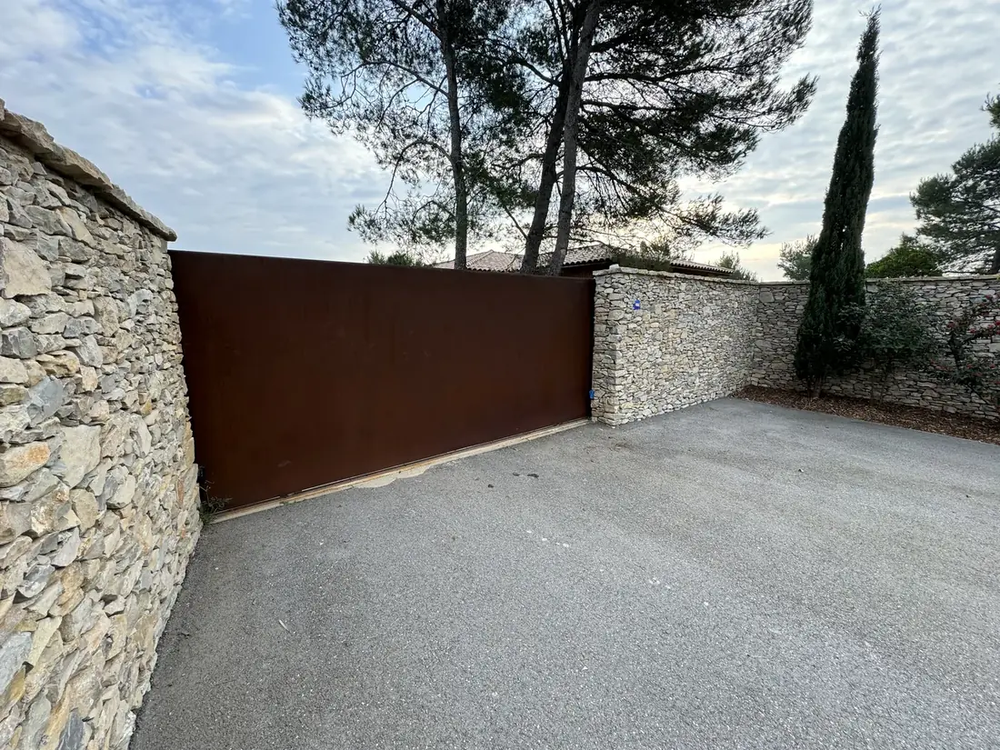
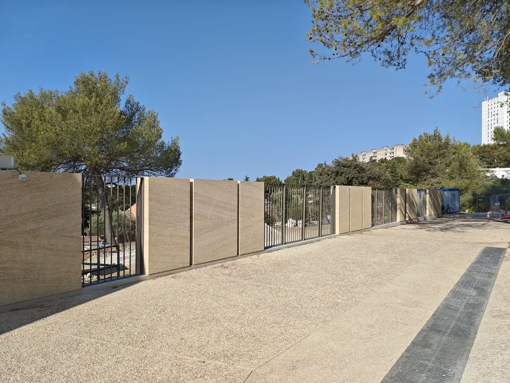
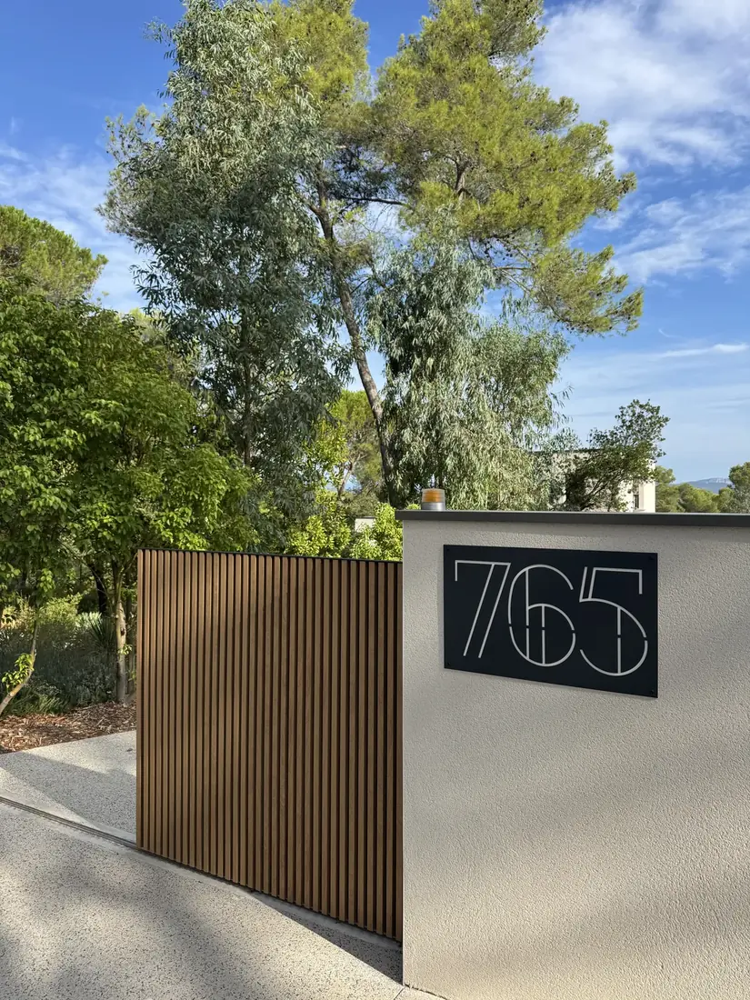
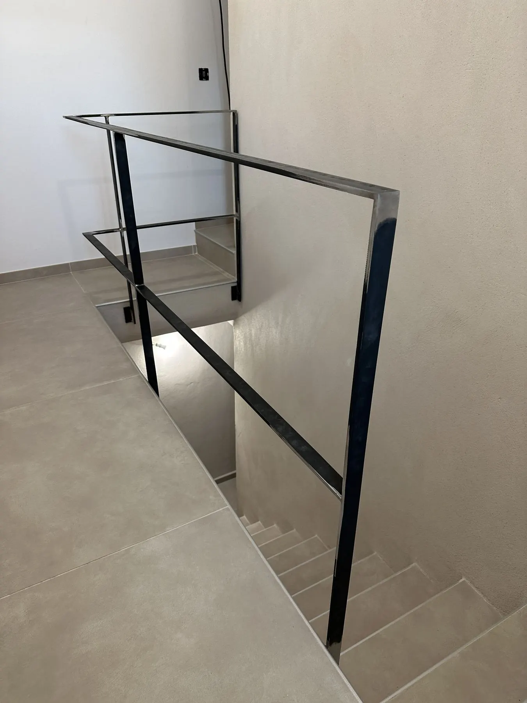
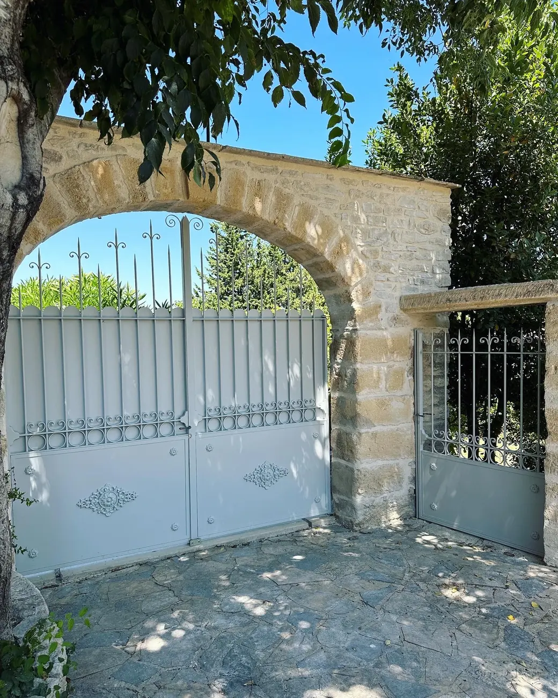

L'acier au service de l'architecture
FMG Metal Studio conçoit et fabrique des ouvrages métalliques haut de gamme, garde-corps, escaliers, verrières et menuiseries acier, pensés comme des pièces d'architecture, pas de simples éléments de ferronnerie. Nous intervenons dans le Gard, l'Hérault, le Vaucluse, les Bouches-du-Rhône et sur toute la Côte d'Azur, du Var à Monaco.
Un atelier au service de l'exigence
Fondé en 2014 par Frédéric Teysseire, FMG Metal Studio est un atelier d'architecture métallique basé à Nîmes, dans le Gard. Nous concevons, fabriquons et installons des ouvrages métalliques sur mesure pour des particuliers, des architectes, des architectes d'intérieur, des professionnels, des institutions, des domaines viticoles et des établissements hôteliers, dans des projets où l'esthétique, la précision et la qualité d'exécution sont essentielles.
Notre savoir-faire couvre la menuiserie acier sur mesure, les verrières, portes acier, escaliers, garde-corps, portails, pergolas, clôtures, le mobilier métallique et, plus largement, tout ouvrage de métallerie et de serrurerie fine. Chaque création est pensée sur mesure pour s'intégrer harmonieusement à son environnement architectural.
Nos menuiseries acier sont développées sous notre marque déposée Pleine Lumière®, avec une attention particulière portée aux lignes, aux proportions et aux finitions. Nous travaillons principalement l'acier, l'inox et l'aluminium, en privilégiant des profilés de qualité, notamment les systèmes JANSEN.
-
Zone d'intervention
Gard, Hérault, Vaucluse, Bouches-du-Rhône, et un accent particulier sur la Côte d'Azur : Var, Alpes-Maritimes, de Nice à Cannes et Monaco. Projets sur mesure partout en France selon leur nature.
-
Finitions
Thermolaquage et finitions spécialisées confiées à des partenaires dédiés, pour une durabilité optimale et une qualité irréprochable.
-
Transmission
Depuis plus de 5 ans, nous formons de jeunes Compagnons du Devoir, convaincus que l'excellence se construit aussi par la transmission du métier.
Nos domaines d'intervention
Garde-corps & rambardes
Intérieur, extérieur, sur mesure, acier, inox, laiton ou aluminium, avec ou sans verre.
02Portails & clôtures
Portails battants ou coulissants, clôtures dessinées pour s'intégrer au bâti.
03Escaliers métalliques
Droits, quart tournant ou hélicoïdaux, structures sur mesure, habillage libre.
04Verrières & menuiserie acier
Verrières d'atelier, marquises, charpentes métalliques et menuiserie acier.
05Pergolas
Pergolas métalliques sur mesure, acier ou aluminium, pour terrasses et extérieurs.
Pleine Lumière®
Notre collection de menuiserie acier : fenêtres, portes et verrières à la française, inspirées des ateliers du XIXe siècle et pensées pour la lumière. Un savoir-faire que nous avons développé et déposé, à la croisée de la métallerie et de la menuiserie.
Découvrir la collection
Réalisations récentes

Porte à galandage monumentale

Porte & verrière acier JANSEN, Nîmes

Extension vitrée monumentale, Avignon

Verrière & paroi de douche laiton, Montpellier

Portail coulissant acier Corten, Nîmes

Ferme École, Nîmes

Plaque d'entrée sur mesure

Garde-corps épuré
Verrière d'atelier

Portail et portillon sur mesure
Un projet sur mesure ?
Particuliers, architectes, professionnels : nous étudions votre projet, du Gard à la Côte d'Azur, et dans toute la France.
Nous contacter